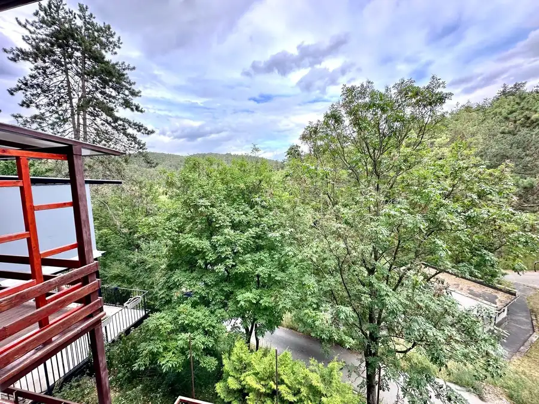
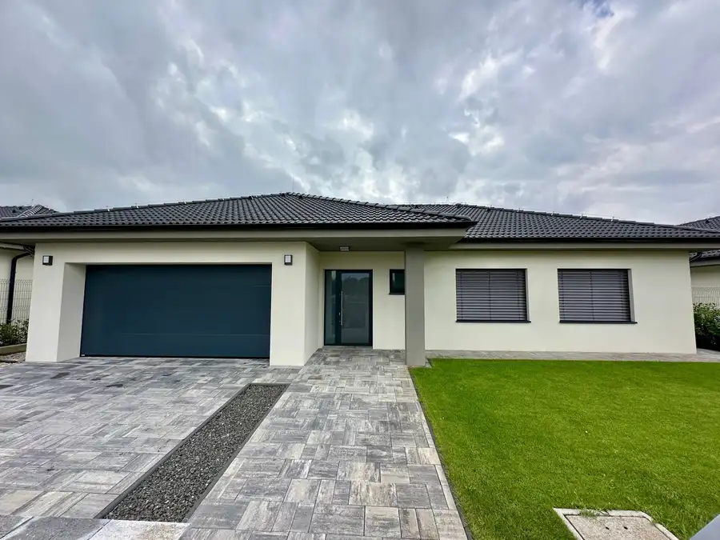
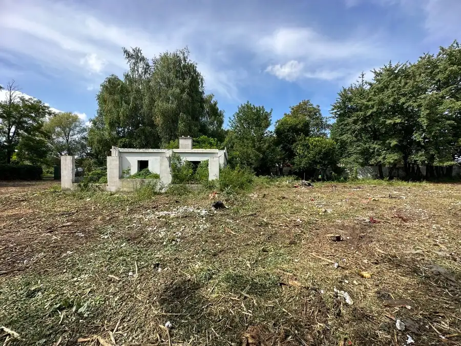

Maxis real: na predaj: exkluzívna novostavba: 5-izbový rodinný dom s dvojgarážou a terasou v Špačinciach – len 5 minút od Trnavy
Špačince
- Plocha577 m²
- StavVo výstavbe
O nehnuteľnosti
Ponúkame na predaj výnimočný 5-izbový rodinný dom, ktorý spája modernú architektúru, veľkorysý priestor a potenciál vytvoriť si bývanie presne podľa vlastných predstáv.Dom je situovaný v pokojnej časti obce Špačince a svojím prevedením, dispozíciou a použitými materiálmi je ideálnou voľbou pre klienta, ktorý hľadá nadštandard, súkromie a komfort v bezprostrednej dostupnosti krajského mesta.Nehnuteľnosť stojí na pozemku o výmere 580 m², so zastavanou plochou 206 m² a podlahovou plochou približne 200 m². Ide o dvojpodlažnú stavbu s premyslenou dispozíciou, ktorá prirodzene oddeľuje dennú a nočnú časť domu.________________________________________DISPOZÍCIA A PRIESTOR:Denná časť domu na prízemí ponúka otvorený koncept bývania – priestranná obývacia izba plynule prepojená s kuchyňou a jedálňou vytvára ideálny priestor pre rodinný život aj spoločenské stretnutia. Komfort dopĺňa špajza, samostatný šatník, toaleta, komora a hosťovská izba s vlastnou kúpeľňou.Priamy vstup do veľkorysej dvojgaráže a technické zázemie domu (práčovňa) zvyšujú praktickosť každodenného bývania.Nočná časť na poschodí pozostáva z troch samostatných izieb, pričom každá z nich má výstup na veľkú terasu, ktorá lemuje strešný priestor domu a ponúka výnimočný priestor na relax. Samozrejmosťou je priestranná kúpeľňa s vaňou aj sprchovým kútom.________________________________________TECHNICKÉ PARAMETRE A ŠTANDARD:•stavba z kvalitnej pálenej tehly•príprava na krb •moderná plochá strecha •hliníkové okná v celom dome •podlahové kúrenie (plynové) •kotol a bojler značky Buderus •samostatná regulácia kúrenia pre jednotlivé podlažia •kompletné inžinierske siete: voda, elektrina, plyn, kanalizácia •optické pripojenie na pozemku ________________________________________STAV NEHNUTEĽNOSTI:Dom sa predáva v štádiu rozostavanosti, čo novému majiteľovi umožňuje dokončiť nehnuteľnosť podľa vlastného vkusu a štandardu.•dokončenosť približne 75-80 % •realizované potery, omietky a maľby •kúpeľne takmer dokončené (obklady, osadené vane) Nehnuteľnosť je aktuálne vedená ako rozostavaná stavba (bez súpisného čísla) a vyžaduje finálne dokončovacie úpravy a následnú kolaudáciu.________________________________________EXTERIÉR A POZEMOK:•rovinatý pozemok o výmere 580 m² •kompletné oplotenie •veľká elektrická posuvná brána •priamy vstup do dvojgaráže ________________________________________PREČO TÁTO NEHNUTEĽNOSŤ?•nadčasová architektúra a veľkorysý priestor •možnosť dokončenia podľa vlastných predstáv •pokojná lokalita s rýchlou dostupnosťou do mesta •ideálne pre náročného klienta hľadajúceho komfort a súkromie ________________________________________CENA:450.000 €________________________________________OBHLIADKY:Obhliadky sú možné po dohode.________________________________________ KONTAKT: Radovan Lehuta 0903 469 745 lehuta@maxisreal.sk________________________________________LOKALITA:Špačince – Hospodárska ulicaV bezprostrednej blízkosti Trnava (cca 5 km)
Parametre
| Druh | Rodinný dom |
|---|---|
| Dátum zverejnenia | 23. 4. 2026 |
| Energetický certifikát budovy | V príprave |
| Plocha pozemku | 0 m² |
| Počet nadzemných podlaží | 2 |
| Rok výstavby | 2026 |
| Stav nehnuteľnosti | Vo výstavbe |
| Terén pozemku | Svahovitý |
| Typ | Predaj |
| Typ konštrukcie | Tehlová |
| Zastavaná plocha | 206 m² |
| Úžitková plocha | 577 m² |
Kde to je


Mohlo by Vás zaujímať

Chata, drevenica, zrubNové10 72 500 €MAXIS REAL: TOP NA PREDAJ: Rekreačná chata po kompletnej rekonštrukcii – Dobrá Voda | Terasy | Smart ovládanie | Pokoj v srdci prírody Dobrá Voda 45 m² Hľadáte miesto, kde si oddýchnete od ruchu mesta, načerpáte energiu v prírode a zároveň budete mať komfort moderného bývania? Potom Vás táto ponuka…
DomNové10 599 000 €MAXIS REAL: NA PREDAJ: NOVOSTAVBA 5-izbového rodinného domu s dvojgarážou v Trnave – Kamenáč Trnava 180 m² Lokalita: Trnava – Kamenáč Úžitková plocha: viac ako 180 m² + terasa cca 25 m² + povala približne 100 m² - zastavaná plocha 250 m² Pozemok: 620 m²…
PozemokNové9 200 000 €MAXIS REAL: TOP NA PREDAJ: Investičný rekreačný pozemok s murovanou chatkou a studňou – Kamenáč, Trnava Trnava 3857 m² Hľadáte miesto, kde si oddýchnete od ruchu mesta, budete pestovať vlastné ovocie čizeleninu alebo uvažujete o investícii do perspektívneho pozemku v…